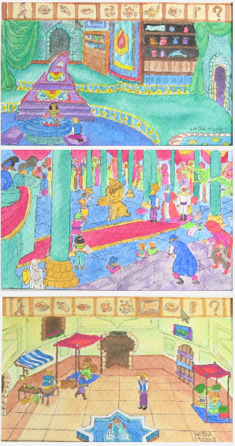

When Ian Bogost and Mike Migurski both mention the same term in close chronological proximity, I feel the need to pay attention. Of course, the one thinks it’s more fodder for taking seriously the personhood of objects (so much so that my use of ‘personhood’ in describing this would likely result in claims that I’m being personist) while the other sees it as a frame for the ever-increasing beauty and sophistication of digital maps. Regardless of whether one takes either of these positions, we have to recognize that there is a new aesthetic movement and that it bodes well for digital humanities scholarship.
Fortunately, you need not be terribly aesthetically aware to benefit from this in the practical terms of integrating these new principles into the creation, representation and evaluation of digital objects. There is a maturity of praxis in the digital creative fields, such as computer gaming, digital painting, citizen GIS, and too many other digital flowers for Mao to count. And this folding in of new digital movements (artistic and social) into academic research, archiving and publishing is an important process for successful digital humanities work
For instance, what Eric Fischer did in mapping the different patterns of geo-tagged tweets and Flickr photos is not only interesting aesthetically but a good methodology that should be explored and built out. It’s notable that Linna Li and Mike Goodchild’s exploration of the same topic took place nearly a year after Fischer had done this. Likewise, my own mapping of DBPedia was inspired by Fischer’s project and is currently being developed to deal with a host of big linked geodata resources in support of the study of natural environments in urban areas. This great vibrancy of digital creativity–whether it is in cultural critique, representation of society, radical geography or artistic procedurality–is fertile ground for scholars of the humanities to draw inspiration (and, dare I suggest it, collaboration) for their own work.

This last point is the key, I think, to the New Aesthetic, in that it embodies the fact that all are creators (and hence programmers) and all are users (and hence programmed). While those of us ensconced in our ivory silos may be tempted to think that lesser persons who cannot code make up the new underclass, there are very few people who now are not digital content creators using visual toolkits to build complex digital objects. Creating something with the richness and reach of a WordPress blog is now so easy that the digerati mock it as not being real digital creation, rather than acknowledging the growing ease and sophistication of digital work. Creating complex data-driven maps is so simple now that you need not ever have taken a GIS course, much less become a GIS professional as was necessary a decade ago, and the result is a growing sense of disdain for all the new cartographers who can produce an amazing map without knowing what a datum is.1
We have already reached the point where hoarding data is more likely to result in missed opportunities than it is to result in benefiting research. If we try to hoard processes, or simply fail to acknowledge this ripe field of interesting methods being developed by the New Aesthetic movement, then the same thing will happen with techniques and tools.
1I think the opening up of GIS to people who cannot afford ArcGIS licenses or the time and money necessary for quantitative geography courses and GIS tutorials is very similar in tone to the opening up of Instagram.